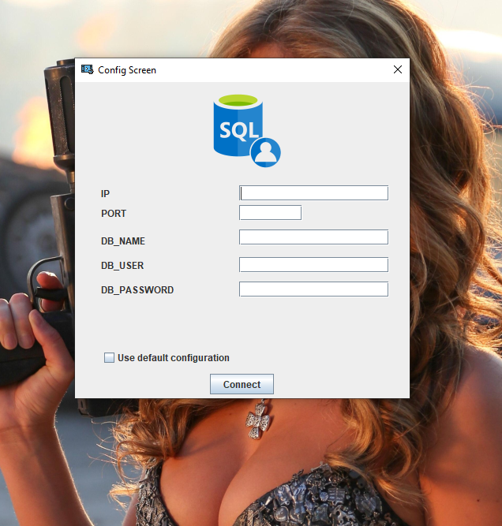

After getting the app installed, if the database connection is null, head to the Connection menu and select the "Configure Connection option"

Add the ip address,database username,database name and the password(if necessary). The default connection option can also be checked to use the coded default connection values.
